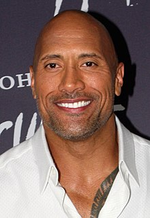

| Photo | Rôle | Acteurs |
|---|---|---|
| Réalisateur | Jake Kasdan | |
|  | Dr Smolder Bravestone alias Le Tombeur, l'avatar de Spencer | Dwayne Douglas Johnson |
| Le professeur Sheldon « Shelly » Oberon, l'avatar de Bethany | Thomas Jacob Black, Junior | |
| Le professeur Sheldon « Shelly » Oberon, l'avatar de Bethany | Kévin Hart | |
 | La Tueuse d'Hommes, l'avatar de Martha | Karen Sheila Gillan |
| Jefferson « Hydravion » McDonough, l'avatar d'Alex | Nick Jonas | |
| Russel Van Pelt | Bobby Cannavale |